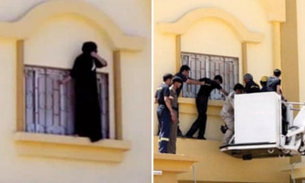

A young woman wearing a black abaya is pictured in a city in north-west Saudi Arabia standing precariously on a second-floor window ledge. A second photograph shows a group of men escorting her down with the help of a crane.
The woman’s identity is unknown, but she was allegedly being held at one of Saudi Arabia’s notoriously secretive “jails” for women banished by their families or husbands for disobedience, extramarital sexual relations or being absent from home.
It was a rare glimpse of the plight of hundreds or more girls and young women believed to be held in such facilities, where they are “rehabilitated” so they can return to their families.
Speaking out in public or sharing footage of these “care homes”, or Dar al-Reaya, has become impossible in a country where voices on women’s rights appear to have been silenced . But over the past six months, the Guardian has gathered testimony about what it is like inside these institutions, described as “hellish”, with weekly floggings, forced religious teachings and no visits or contact with the outside world.
Conditions are reported to be so bad that there have been several cases of suicide or attempted suicide. The women can spend years locked up, unable to leave without the permission of their family or a male guardian.
“Every girl growing up in Saudi knows about Dar al-Reaya and how awful it is. It’s like hell. I tried to end my life when I found out I was going to be taken to one. I knew what happened to women there and thought ‘I can’t survive it’,” says one young Saudi woman who later managed to flee into exile.
Maryam Aldossari, a Saudi activist based in London, says: “A young girl or woman will stay in there for as long as it takes for her to accept the rules.”
A woman stands on window ledge, allegedly trying to escape one of Saudi Arabia ‘care homes’ and is then apparently helped down by a group of men.
While Saudi Arabia celebrates being awarded the Fifa men’s World Cup and meticulously promotes itself on the global stage as reformed, women who have dared to publicly call for more rights and freedoms have faced house arrest, jail and exile . Activists say the country’s care homes are one of the regime’s lesser-known tools for controlling and punishing women, and want them to be abolished.
Saudi officials have described the care homes , which were set up across the country in the 1960s, as providing “shelter for girls accused or convicted of various crimes” and say they are used to “rehabilitate the female inmates” with the help of psychiatrists “in order to return them to their family”.
But Sarah Al-Yahia, who started a campaign to abolish the care homes, has spoken to a number of girls who describe an abusive regime, with inmates subjected to strip-searches and virginity tests on arrival and given sedatives to put them to sleep.
“It is a prison, not a care home, as they like to call it. They call each other by numbers. ‘Number 35, come here.’ When one of the girls shared her family name, she got lashes. If she doesn’t pray, she gets lashes. If she is found alone with another woman she gets lashes and is accused of being a lesbian. The guards gather and watch when the girls are being lashed.”
Yahia, who is now 38 and lives in exile, says her parents had threatened to send her to Dar al-Reaya since she was 13. “My father used it as a threat if I didn’t obey his sexual abuse,” she says, adding that girls and women may face the horrifying dilemma of deciding between Dar al-Reaya and staying in an abusive home.
“They make it impossible for others to help women fleeing abuse. I know a woman who was sentenced to six months in jail because she helped a victim of violence. Giving shelter in the case of a woman charged for ‘absenteeism’ is a crime in Saudi Arabia.
“If you are sexually abused or get pregnant by your brother or father you are the one sent to Dar al-Reaya to protect the family’s reputation,” she says.
Amina*, 25, says she sought refuge in a ‘care home’ in Buraydah, a city in central Saudi Arabia, after being beaten by her father. She says the building was “old, crumbling and unsettling” and the staff “cold and unhelpful”. They belittled her experience, says Amina, telling her other girls had it “far worse” and were “chained at home” and told her to “thank God my situation wasn’t that bad”.
The next day, staff summoned her father, says Amina, but did little to protect her. “They asked both of us to write down our ‘conditions’. I requested not to be beaten or forced into marriage, and to be allowed to work. My father demanded that I respect everyone, never leave the house without permission, and always be accompanied by a male escort. I signed out of fear – I didn’t feel I had a choice.”
Once she returned home, Amina says the beatings continued and in the end she was forced to flee into exile. “I remember being utterly alone and terrified. I felt like a prisoner in my own home, with no one to protect me, no one to defend me. It felt like my life didn’t matter, like even if something terrible happened to me, no one would care,” she says.
For young girls, learning to fear Dar al-Reaya starts from a young age. Shams* says she was 16 when a woman who had been in one of the care homes was brought to her school. She told the class that she had started a relationship with a boy and was caught by the religious police and made to confess to her father. After she became pregnant her family disowned her and the father refused to allow her to marry, so she was sent to Dar al-Reaya. “She told us, if a woman has sex or a relationship she becomes a ‘cheap woman’. If you are a man you will always be a man, but if a woman makes herself cheap, she will be cheap for life.”
Saudi Arabia meticulously promotes itself as reformed on the subject of rights.Photograph: Bloomberg/Getty Images
Layla*, who still lives in the country, says she was taken to Dar al-Reaya after complaining to the police about her father and brothers. She says they abused her and then accused her of bringing shame on her family after she posted on social media about women’s rights. She remained in the care home until her father agreed for her to be released, even though he was her alleged abuser.
“These women have no one. They could be abandoned for years, even without committing a crime,” says a Saudi women’s rights activist who wishes to remain anonymous. “The only way out is through a male guardian, marriage or jumping off the building. Old men or former convicts who did not find a bride would look for a bride in these institutions. Some women would accept this as the only way out.”
Some Saudi men will say a woman deserves to be there or that they should be thankful that the government provides facilities to protect them, says Fawzia al-Otaibi, an activist forced to flee the country in 2022.
“No one dares tweet or speak about these places. No one will ask about you when you go there. They make the victims feel ashamed,” Otaibi says.
Activists say that if the Saudi regime were serious about women’s rights they would reform the care home system and provide proper safe shelters for victims of abuse. “There are women who have good families who do not abuse or hide them,” says a Saudi activist now living in exile. “But many live under strict restrictions and suffer abuse silently. The state supports this abuse with these institutions. They only exist to discriminate against women. Why are the Saudi authorities allowing them to stay open?”
The human rights group ALQST says Dar al-Reaya facilities are notorious within Saudi Arabia as state tools for enforcing gender norms and “stand in stark contrast to the Saudi authorities’ narrative of women’s empowerment”.
Its campaigns officer, Nadyeen Abdulaziz, says: “If they are serious about advancing women’s rights, they must abolish these discriminatory practices and allow the establishment of genuine shelters that protect, rather than punish, those who have experienced abuse.”
A Saudi government spokesperson said there was a network of specialised care facilities that supported vulnerable groups, including women and children affected by domestic violence. It categorically rejected claims of enforced confinement, mistreatment, or coercion.
“These are not detention centres, and any allegation of abuse is taken seriously and subject to thorough investigation … Women are free to leave at any time, whether to attend school, work, or other personal activities, and may exit permanently whenever they choose with no need of approval from a guardian or family member.”
It also said that reports of domestic violence were received through a dedicated and confidential hotline, and that all cases were addressed swiftly to ensure the safety of those affected.
* Names have been changed